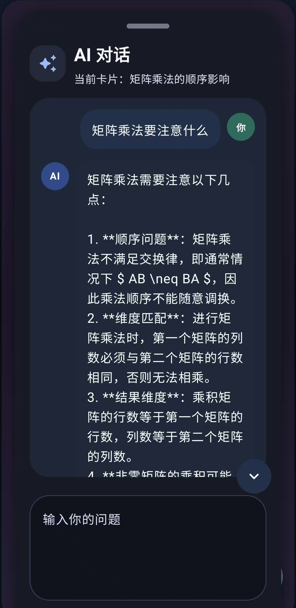

核心界面
围绕知识卡片展开的移动学习体验
产品能力
不是堆功能，
而是围绕“从素材到记忆”
这条链路做完整闭环
Markdown 原生输入
适合课程笔记、概念总结和带层级结构的复习内容输入，也能更自然地承载代码块、列表结构和数学公式，让原始素材在进入卡片整理前就足够清晰。
图片 OCR 即将上线
后续将支持把截图、拍照内容或公式图片先转成文字，再进入 AI 整理流程，减少手动誊写和重复输入，让图像素材也能顺畅进入制卡链路。
AI 强化生成
自动产出标题、自测问题、答案、复习提示和易错点，把原始素材转成更适合回忆、复习和反复刷看的卡片内容，而不只是简单摘要。
围绕单张卡片迭代
你可以继续追问 AI、手动修改内容，或者直接基于当前卡片做二次重写，让每一张卡都能在使用过程中不断被补充、压缩和打磨得更适合自己。
移动端刷卡复习
重点不是“存下来”，而是让卡片真的能被高频使用，在手机端形成持续刷卡、标记重点、回看强化的复习节奏，把内容真正送进长期记忆。
卡片优先管理
搜索、编辑、归档、回顾都围绕卡片展开，文件夹只承担轻量分类而不是主角，让你管理的始终是知识本身，而不是越来越重的目录结构。
使用路径
一条最典型的学习流
导入素材
先整理课堂笔记和教材摘要；多文件插入 即将上线
OCR 与整理
图片 OCR 即将上线，后续可先提取文字再交给 AI 整理。
补全记忆信息
补充自测问题、易错点、总结句，把“会看”变成“能回忆”。
进入刷卡循环
在 Feed 中持续滑动、标记、强化和回看，让内容真正进入长期记忆。
演示视频
六段核心演示，直接展示 MemFlow 在安卓端的真实交互
滑动切页
像信息流一样切页，移动端复习更自然。
多文件夹刷卡
支持多个文件夹组合刷卡，按你的复习范围灵活切换。
Markdown 格式
双击进入卡片，支持 Markdown 与公式。
刷卡中 AI 对话
复习时直接追问当前卡片，边刷边补理解。
AI 对话建卡
通过连续对话，把素材整理成可复习卡片。
深浅色与标记
切换深浅色模式，并标记重点卡片。
未来展望
让长文、文件和视频里的有效信息，也能直接沉淀进你的卡片库
MemFlow 后续不只想解决“手动做卡”，还想把那些本来很容易看完就忘的内容， 变成可以导入、整理、复习和持续回看的知识卡片。
长文卡片一键导入
比如你在知乎读完一篇高质量长文，作者已经把 Key Point 或知识卡片整理在文末。未来可以直接点击链接，把这些卡片导入自己的库，省掉重复整理的时间。
多文件全自动制卡
比如用户一次输入几份文件，像期末复习题库、讲义、笔记或重点清单，AI 自动抽取高频考点、归并重复内容，并批量生成适合复习的卡片。
短视频知识归档
比如很多面试技巧视频看完当下觉得有用，但过几天就忘了。未来可以把这类视频中的关键建议、表达模板和注意事项自动归档总结，沉淀成能反复刷的卡片。
分享卡片与卡片库
未来支持把单张卡片或整个卡片库分享出去，让你整理出的重点、方法和有深度的理解，被更多真正需要的人看到。